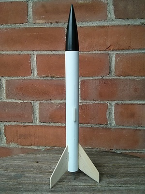
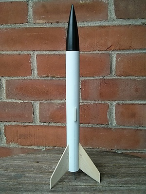
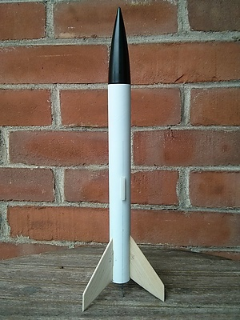

SPAG Home
This is what the kit looks like :)
First, I prepared the motor mount and sanded the fins. I fixed the motor mount inside the tube and made fillets.
assembledunpainted_small.jpg" title="" />


 assembledunpainted_small.jpg" title="" />
assembledunpainted_small.jpg" title="" />